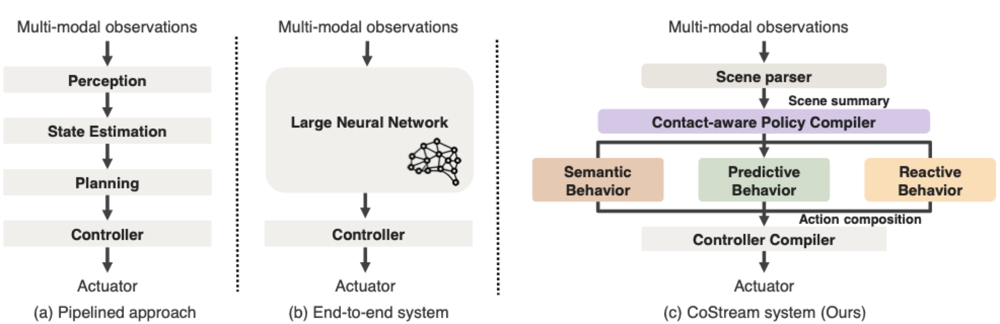

CoStream: Composing Simple Behaviors for Generalizable Complex Manipulation
1 2
2 3
3 4
4
2
3
4
2
3
4
Long-horizon, contact-rich manipulation — such as seating a GPU into a PCIe slot — demands both millimeter precision and generalization to new tasks. Classical pipelines achieve precise control through brittle, task-specific interfaces that need costly redesigns, while monolithic policies generalize better but lose precision on out-of-distribution tasks unless retrained. Both assume a capability, once acquired, must ship as a rigid whole rather than being freely decomposed and recomposed.
We show that complex manipulation can emerge from composing simple, independent behaviors. CoStream orchestrates foundation models and diverse sensors into composable core behaviors: a semantic behavior extracting spatial constraints, a predictive behavior forecasting trajectories from imagined videos, and a reactive behavior providing high-frequency tactile corrections. On a shared SE(3) interface, these compose by right-multiplication into one pose command per control step.
We demonstrate CoStream on 8 real-world tasks spanning everyday manipulation and precision assembly — with the strongest gains in contact-rich assembly and object transfer — and show robust recovery from manual perturbations during execution.

CoStream: Composing Simple Behaviors for Complex Contact-Rich Manipulation. CoStream composes multiple sensor-grounded behaviors into a single end-effector command. A semantic behavior parses instructions with an LLM and a VLM into geometric constraints. A predictive behavior extracts a 3D reference trajectory from a video world model. A reactive behavior closes a high-rate loop from tactile and force feedback. The behaviors share an SE(3) interface and compose by right-multiplication into one pose command at every control step, which a compliant controller executes while regulating contact force.
The same set of behaviors solves 8 contact-rich tasks — from sub-millimeter assembly to everyday manipulation — with no per-task demonstrations, retraining, or pipeline redesign.
We evaluate CoStream on 8 real-world tasks (15 trials each) across two groups: high-precision contact-rich assembly and everyday manipulation.
CoStream reaches a 96.7% mean success rate, while VoxPoser and π0.5 complete none (0.0%). Drill insertion: 0.5 mm clearance. Hover a bar for raw trials.
CoStream (66.7% mean) improves over π0.5 (11.7% mean) across everyday tasks, with the largest gains on object transfer.
The reactive behavior is essential for sub-millimeter precision. On drill insertion, removing it drops success from 100% to 20% — tactile force feedback is critical for handling sub-millimeter clearances.
CoStream completes the full motherboard assembly sequence — transitioning seamlessly between CPU, GPU, and RAM insertion — demonstrating compositional generalization across contact-rich subtasks without task-specific retraining.
Same behaviors, zero retraining between subtasks. Full motherboard assembly — CPU, GPU, and RAM installation in sequence (4× speed).
CoStream transfers to everyday manipulation without per-task retraining. We compare CoStream (left) against the monolithic VLA baseline π0.5 (right) on the same tasks.
CoStream's reactive behavior provides real-time corrections that preserve the objectives set by the semantic and predictive behaviors, even under external perturbations during execution.
The predictive behavior uses a video world model to "imagine" candidate trajectories from the current image and step instruction. A VLM critic selects the rollout that best satisfies the semantic and safety constraints, and a 3D keypoint tracker lifts it into an object-centric motion prior.
Crucially, this is just one behavior. Every behavior — foundation model, learned network, or classical control — is simply a function f(observation) → SE(3). Because they share this interface, extending CoStream means adding one behavior, not redesigning a pipeline or retraining a policy.
The video world model generates a valid trajectory for GPU insertion
The VLM critic filters out physically implausible rollouts
Despite a 96.7% mean success rate, failures remain, from two main sources: perturbations that exceed the reactive stream's correction capacity, and semantic reasoning errors during multi-stage planning.
A large-magnitude perturbation displaces the GPU beyond the reactive behavior's recovery range, resulting in a failed insertion attempt.
An incorrect stage transition predicted by the LLM semantic behavior causes the robot to proceed prematurely, resulting in a misaligned RAM insertion.
@misc{costream2026,
title = {CoStream: Composing Simple Behaviors for Generalizable Complex Manipulation},
author = {Chen, Haonan and Ma, Yuxiang and Tian, Stephen and Han, Xiaoshen and Huang, Wenlong and Wu, Feiyang and Li, Yunzhu and Wu, Jiajun and Adelson, Edward H. and Du, Yilun},
year = {2026}
}